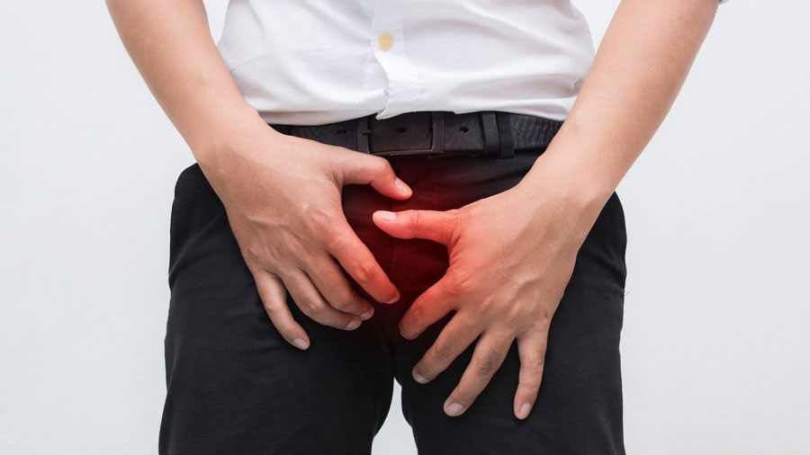

Salutări tuturor!
Mă numesc Doru, am 63 de ani. Sunt originar dintr-un mic oraș din Giurgiu. Am trăit toată viața mea acolo. Am lucrat la ferme, am condus combine și alte echipamente de teren. Și la 47 de ani, m-am urcat la volanul autobuzului și am condus locuitorii orașului timp de 16 ani.
Îmi place profesia mea, ies dimineața să fac curse, întâlnesc oameni cunoscute la opriri, care mă așteaptă foarte mult. Mă simt necesar pentru comunitate. Dar din acest motiv, am început să am probleme serioase cu sănătatea bărbaților.
Prostatita mi-a apărut la vârsta de 53 de ani. Mulți ani de muncă sedentară și-au lăsat amprenta. A apărut durerea în penis, scrot, rect. A apărut disfuncție erectilă, ejacularea precoce și chiar un amestec de sânge în urină.

La început, nu am acordat prea multă importanță primelor simptome. Am atribuit-o oboselii și nervilor. Dar când am început să mă trezesc de cinci ori de durere noaptea, m-am speriat cu seriozitate.
M-am dus la doctor, am făcut analizele, am trecut examenele. Mi-a fost dat un verdict – prostatita de tip III B. Nu am fost niciodată atât de deprimat în viața mea. Știind puțin în acel moment despre această boală, m-am gândit că viața mea se va termina aici. Nu credeam că voi muri complet, dar, ca bărbat, aș putea renunța la mine.
Despre boală
Înainte de prima mea vizită la proctolog, am început să caut informații despre boală pe cont propriu. Iată ce am reușit să aflu.
Prostatita este un proces inflamator al țesutului prostatic, însoțit de dureri în partea inferioară a spatelui, perineului sau zonei pelvine, precum și tulburări ale tractului urinar inferior. Este cauzată de microbi piogenici. Se înmulțesc instantaneu și distrug țesutul prostatic foarte repede.
În absența activității sexuale și cu un stil de viață sedentar, alimentarea cu sânge a organelor pelvine se înrăutățește, ceea ce provoacă înfometarea cu oxigen a țesuturilor prostatei și stagnarea. Toate acestea creează un mediu ideal pentru dezvoltarea activă a microorganismelor patogene care provoacă inflamații.
Cauzele apariției și dezvoltării inflamației:
- Stres
- Hipotermie frecventă
- Abstinență sexuală prelungită
- Deficiențe imunitare
- Încălcarea circulației sângelui în organele pelvine
- Dezechilibru hormonal
- Lipsa de vitamine și oligoelemente
- Nerespectarea regulilor de igienă personală
Boala este adesea complicată de dezvoltarea unui abces purulent și de intoxicația generală a corpului. Pentru tratamentul inflamației acute, se utilizează administrarea intravenoasă a antimicrobienelor. Chiar și cu terapia în timp util, există un risc ridicat de a dezvolta o boală cronică.
Umilință
Medicul mi-a prescris un curs de medicamente. Au ușurat puțin simptomele, dar nimic mai mult. Am renunțat la administrarea medicamentelor, am intrat în depresie, am pierdut încă două luni. Durerea nu m-a lăsat să uit de problemă.
M-am dus la încă cinci specialiști, dar regimurile lor de tratament erau similare. Pastilele au dat o mică ușurare, dar numai pe durata de acțiune a pilulei. Nu am vrut să stau pe ele toată viața.
Am început să caut un tratament alternativ. Am băut tincturi și decocturi de casă. Am folosit unguente și comprese. Odată m-am dus chiar la un vrăjitor.
El a făcut un ritual în care m-a pus într-o stare de transă. În capul meu, am văzut un spirit care mi-a spus să renunț la toate experiențele mele, să încep să trăiesc ca înainte, să mă bucur în fiecare zi. Când m-am revenit în fire, am simțit un sentiment de umilință și calm.
M-am întors în oraș, am început să beau din nou medicamente pentru a ameliora senzațiile dureroase. Ritualul a făcut o impresie foarte puternică asupra mea. Viața a început să revină la normal, dar cu o boală.
A trecut un an de administrare a medicamentelor. M-am simțit bine și calm în sufletul meu, dar era deja imposibil să trăiesc și să lucrez fără analgezice. Am început să merg la biserică. M-am alăturat rândurilor de voluntari.
Din nou am mers să vizităm persoanele în vârstă într-un azil. Acolo am întâlnit o persoană uimitoare. Numele lui era Grigor. Era un om puternic, cu părul gri și un aspect înțelept. Am găsit imediat un limbaj comun. El a vorbit despre viața lui foarte interesant și fervent. Uneori părea că în aceste momente chiar devenea mai tânăr.
Într-una din întâlnirile noastre, am fost străpuns de o durere ascuțită (am uitat să iau o pastilă înainte de a ieși din casă). Grigor a înțeles imediat totul, am început să vorbim despre acest subiect. S-a dovedit că și el a căutat mântuirea de această boală de mult timp și, potrivit lui, a găsit-o. L-am respectat pe el și pe toată înțelepciunea lumească, dar nu am crezut în remediul lui "miraculos". O lună mai târziu, Grigor a murit. Cancerul l-a luat. Tot ce mi-a rămas este jurnalul lui, care arată mai mult ca o amintire și o notă:
"Întotdeauna crede în dragoste și Dumnezeu. Crede întotdeauna în tine și în cei care te iubesc. Și niciodată, nu păstrează-ți niciodată durerea și resentimentele".
Toate aceste experiențe au agravat inflamația, durerea a revenit cu o forță nouă, analgezicele nu mai m-au ajutat. Atunci mi-am amintit despre conversația noastră și despre capsulele.
Noua speranță
Fiul meu m-a ajutat să găsesc acest remediu pe Internet. De asemenea, am găsit o mulțime de recenzii bune și o explicație complet logică pentru efectul medicamentului.
Ingrediente naturale în compoziția sa - acizi grași polinesaturați, omega-3, tiamină, riboflavină, caroten. Toate acestea au fost mult timp cunoscute pentru proprietățile lor utile. Dar există și clorofilă în compoziția (o substanță naturală găsită în celulele bacteriene).
Oamenii de știință israelieni de la Institutul Weizmann au studiat clorofilă în uleiul de cânepă de mulți ani și au reușit să dezvolte o tehnică și o serie de medicamente bazate pe aceasta. Eficacitatea utilizării sale a fost deja aprobată de medici americani și israelieni.
Mecanismul de acțiune este simplu. Datorită structurii sale naturale, clorofila pătrunde foarte ușor celulele tisulare rapid și nedureros. Îi saturează cu oxigen și accelerează procesele de regenerare. Într-un astfel de mediu, componentele rămase ale medicamentului sunt dezvăluite și absorbite complet de organism, fără pierderi.
Am început să administrez capsule imediat ce a sosit comanda. Deja după o săptămână, am simțit o mică ușurare. Pe măsură ce cursul a progresat, rezultatul a devenit mai bun și mai bun. Până la sfârșitul cursului, am devenit destul de bun. Dar a devenit înfricoșător să termin administrarea, mi-a fost teamă că totul se va întoarce. Am comandat altul și l-am pus pe raft – în cazul în care temerile mele vor fi confirmate.
Victorie
A trecut un an. Nu a existat nici o recidivă chiar din cauza unei răceli foarte puternice. Medicamentul nu a fost niciodată necesar, dar a fost pe raft pentru reasigurare mea morală. Mă simt minunat de câțiva ani acum, nu-mi amintesc de prostatită.
Capsulele s-au dovedit a fi un "miracol", pentru mine precis. Și pentru toți cei cărora le-am recomandat. Întotdeauna păstrez o mică rezervă pe raft în caz de forță majoră. Vârsta încă își dă propria ei și imunitatea nu mai este deja aceeași. După ce am trecut toată această cale dificilă, pot spune cu încredere – bărbați, nu vă otrăviți cu chimie, căutați remedii naturale.
Capsulele pot fi achiziționate întotdeauna pe site-ul oficial al producătorului. Vă recomand să o faceți acolo, pentru a nu cădea pe un fals. Mai mult decât atât, există cel mai bun preț fără marjă, iar până la sfârșitul săptămânii există o ofertă specială -50% din cost!